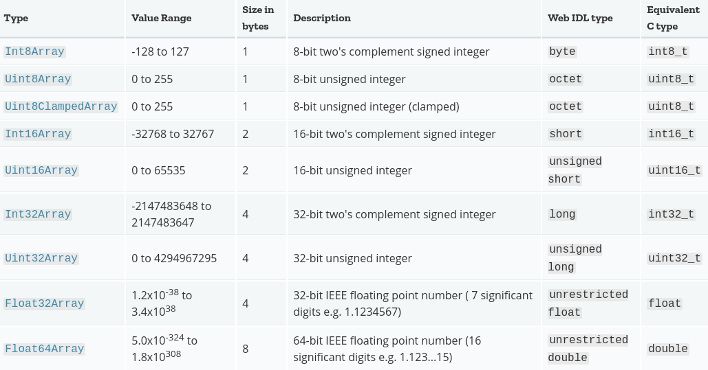

Szkolenie ES6
..czyli ES2015
w sumie ES6 to nie język
nikt nie wie co to~~
Co ciekawego? (1/2)
Arrow function
Tablice typowane
Parametry domyślne
Klasy!!!!!!!
Subklasowanie tablic
Operator reszty*
Generator/iterator
Szablony stringów
Co ciekawego? (2/2)
Nacjonalizacja
Zmienne kontekstowe
Stałe
Meta programowanie
I inne cuda
Od najciekawszych...
...do powiedzmy mniej ciekawych
Trochę pajtonika dla odniesienia
class Invoice(AbstractAggregate):
def __init__(self, seller, **kwargs):
super().__init__(**kwargs)
self.seller = seller
@property
def address(self):
return 'Address:\n%s' % self.seller.getAddressFormatted()
# ...
def __iter__(self):
self.n = 0
self.cachedItemsCount = len(self.cachedItems)
return self
def __next__(self):
if self.n >= self.cachedItemsCount:
raise StopIteration
item = self.cachedItems[self.n].prepareItem()
self.n += 1
return item
Co to zajęzyk? ™
class Invoice extends AbstractAggregate {
constructor(seller, ...kwargs) {
super(...kwargs);
this.seller = seller;
}
get address(){
return `Address:\n${this.seller.getAddressFormatted()}`
}
[Symbol.iterator]() {
let cachedItemsCount = this.cachedItems.length,
n = 0;
return {
next () {
let item = this.cachedItems[n].prepareItem();
n++;
return {
done: n >= cachedItemsCount ? true : false,
value: item
}
}
}
}
}
Tak, klasy w JavaScript'cie!
Klasy kiedyś (ES5)
var Czlowiek = function(wasy){
if (wasy === undefined){
wasy = false;
}
if (typeof wasy !== 'boolean'){
throw "Ma wąsy czy nie?"
}
this.wasy = wasy;
}
Czlowiek.prototype.maWasy = function(){
return this.wasy;
}
var Zwiazkowiec = function(){
Czlowiek.call(this, true);
}
Zwiazkowiec.prototype = Object.create(Czlowiek.prototype);
Zwiazkowiec.prototype.constructor = Zwiazkowiec;
Klasy teraz (ES6)
class Czlowiek {
constructor(wasy=false){
this.wasy = wasy
}
maWasy() {
return this.wasy
}
get wasy() {return this._wasy}
set wasy(val) {
if(typeof val !== 'boolean') {
throw 'Ma wąsy czy nie?'
}
this._wasy = val
}
}
class Zwiazkowiec extends Czlowiek{
constructor(){
super(true)
}
}
Settery, gettery, static
class Miasto {
// ...
set ludnosc(val) {return this._ludnosc = val}
get ludnosc() {return this._ludnosc}
static defaultoweMiasto(){
return new Miasto(1, 2, 3, 'Wilkowyje')
}
}
Subklasowanie tablic
class HyperArray extends Array {
sum() {
let _sum = (i, j) => i + j;
return this.reduce(_sum)
}
average() {
return this.sum()/this.length
}
max() {
let _max = (i, j) => i > j ? i : j;
return this.reduce(_max)
}
}
Tablice typowane
© https://developer.mozilla.org/en-US/docs/Web/JavaScript/Typed_arrays Zmienne, stałe
Const
const stala = 123.456;
Const
(Kiedyś*)
Object.defineProperty(
typeof global === 'object' ? global : window,
'stala',
{
value: 123.456,
enumerable: true,
writable: false,
configurable: false
}
)
* - tylko globalnie. Node: object, przeglądarka: window
Symbol
Czyli coś cholernie unikalnego
let s = Symbol('s')
// String wewnątrz konstruktora jest tylko do debugu, nic nie zmienia.
Symbol() === Symbol() // false
Symbol() == Symbol() // false
const a = Symbol('a')
const b = Symbol('b')
let obj = {}
obj[a] = 1
obj[b] = 2
obj['c'] = 3
Object.keys(obj) // ["c"]
Object.getOwnPropertyNames(obj) // ["c"]
Object.getOwnPropertySymbols(obj) // [Symbol(a), Symbol(b)]
Let vs. var
for(var i=0; i<10; i++){
var x = i;
}
// i == 9 ???
// x == 9 ???
// yyyy, niby wewnątrz scope :-)
// garbage collector płacze
for(let i=0; i<10; i++){
let x = i;
}
// i --> ReferenceError !
// x --> ReferenceError ! Yay
var
Przypadek złośliwy
var callbacki = [];
for(var i=0; i<3; i++) {
callbacki.push(function() {return i*10})
}
callbacki[0](); // 0 * 10 == 30?
callbacki[1](); // 1 * 10 == 30?
callbacki[2](); // 2 * 10 == 30?
var
Naprawmy to
var callbacki = [];
for(var i=0; i<3; i++) {
(function(i){
callbacki.push(function() {return i*10})
})(i)
}
callbacki[0](); // 0
callbacki[1](); // 10
callbacki[2](); // 20
Let
Samo się fixło
var callbacki = [];
for(let i=0; i<3; i++) {
callbacki.push(function() {return i*10})
}
callbacki[0](); // 0
callbacki[1](); // 10
callbacki[2](); // 20
Arrow function
let max = _array.reduce(function(tmp, curr) {tmp > cur? : tmp : cur})
// vs.
let max = _array.reduce((tmp, curr) => tmp > cur? : tmp : cur)
// lub
let max = _array.reduce((tmp, curr) =>{tmp > cur? : tmp : cur})
Niby pierdoła
Ale..
Rozwiązuje pewien wkurzający problem
function Test() {};
Test.prototype.fn = function() {
function test() {
console.log(this)
}
test();
}
// new Test().fn()
// window ????
// uhuhu, na bogato
Naprawmy to klasycznie
function Test() {};
Test.prototype.fn = function() {
var _this = this;
function test() {
console.log(_this)
}
test();
}
// new Test().fn()
// teraz jest ok
Naprawmy mądrzej
function Test() {};
Test.prototype.fn = function() {
var test = function() {
console.log(this)
}.bind(this)
test();
}
// new Test().fn()
// teraz też git
A teraz użyjmy arrow function
function Test() {};
Test.prototype.fn = function() {
let test = () => {
console.log(this)
}
test();
}
// new Test().fn()
// jest git
*Jeszcze prezentacja na tablicach
Parametry i stringi
- Rest parameter
- Spread operator
- Domyślne wartości
- Destructuring (Rozpakowywanie struktur)
- Template literal/string
Rest parameter
function test(x, ...other) {
console.log(x)
console.info(other)
}
Spread operator
function test(a, b, c) {
console.log(a, b, c)
}
test(1, ...[2, 3])
test(...[1, 2], 3)
Domyślne wartości
function test(a=1, b=2, c=3) {
console.log(a + b + c)
}
test()
test(1,2,3)
test(0)
test(0, 0)
test(0, 0, 0)
Rozpakowanie struktur
let [a, b] = [1, 2]
let [a, b, ...c] = [1, 2, 3, 4, 5, 6]
let [a, , b] = [1, 2, 3]
let [a, , b] = [1, 2 , 3, 4, 5]
let {a, b} = {a: 1, b: 2}
let [a=1, b=2, c] = [3, 4, 5]
let [a=1, b=2, c] = [1]
function test({val1: a, val2: b}){
console.log(a, b)
}
test({val1: 5, val2: 3, c: 5})
Template literal
let a = 'aaa', b = 'bbb', c = {d: 123}
// kiedyś
let x = 'To jest sklejka a (' + a + '), b(' + b + '), c->d(' + c.d + ')'
//teraz
let x = `To jest sklejka a (${a}), b(${b}), c->d(${c.d})`
Inne
Warte wspomnienia
- Iterator
- Generator
- Moduły
- "Lokalizacja"
- Promise
- Meta-programowanie
Moduły
(kiedyś)
// math.js
var Aggregation = {}
Aggregation.average = function(arr) {
return arr.reduce(function(acc, cur){return acc+cur})/arr.length
}
Aggregation.variable = 123
// main.js
var tab = [1,2,3]
Aggregation.average(tab)
Moduły
(teraz)
// math.js
export default function average(arr) {
let _avg = (acc, cur) => {acc+cur})
return arr.reduce(_avg)/arr.length
}
export var variable = 123
// main.js
import * as Aggregation from 'math'
// import {average, variable} from 'math'
let tab = [1,2,3]
Aggregation.average(tab)
Iterator
*Fajny przykład z http://es6-features.org
let fibonacci = {
[Symbol.iterator]() {
let pre = 0, cur = 1
return {
next () {
[ pre, cur ] = [ cur, pre + cur ]
return { done: false, value: cur }
}
}
}
}
for (let n of fibonacci) {
if (n > 1000)
break
console.log(n)
}
Generator
*Fajny przykład z http://es6-features.org
let fibonacci = {
*[Symbol.iterator]() {
let pre = 0, cur = 1
for (;;) {
[ pre, cur ] = [ cur, pre + cur ]
yield cur
}
}
}
for (let n of fibonacci) {
if (n > 1000)
break
console.log(n)
}
Nacjonalizacja/Lokalizacja
// daty
Date() // "Thu Mar 29 2018 05:47:50 GMT+0000 (-00)"
let l10nEN = new Intl.DateTimeFormat("en-US")
let l10nPL = new Intl.DateTimeFormat("pl-PL")
l10nEN.format(new Date()) // "3/29/2018"
l10nPL.format(new Date()) // "29.03.2018"
// liczby
let l10nEN = new Intl.NumberFormat("en-US")
let l10nPL = new Intl.NumberFormat("pl-PL")
l10nEN.format(1234567890.123) // "1,234,567,890.123"
l10nPL.format(1234567890.123) // "1 234 567 890,123"
// pieniądze
let l10nEN = new Intl.NumberFormat("en-US", { style: "currency", currency: "USD" })
let l10nPL = new Intl.NumberFormat("pl-PL", { style: "currency", currency: "PLN" })
l10nEN.format(1234567890.123) // "$1,234,567,890.12"
l10nPL.format(1234567890.123) // "1 234 567 890,12 zł"
Promise
Czyli co by tu zwrócić, jak mamy asynchroniczne przetwarzanie
 © developer.mozilla.org
© developer.mozilla.org
Promise - przykład
let promise = new Promise((resolve, reject) => {
// robimy cokolwiek i na koniec wołamy resolve albo reject :: np.
setTimeout(function() {
resolve("Znudziło mi się czekanie")
}, 500)
});
promise.then(data){
// sukces
}.catch(reason) {
// smutek
}
Meta-programowanie
Cała prezentacja by z tego była ;-)
Do wybadania TutajGeneralnie weszły w użycie Proxy oraz Refleksje
Coming up next..
- API HTML5: audio, file, canvas itd.
- WebWorker
- WebSocket
The end; © rikkt0r
Nadszedł czas napierdalania!
Nie bądźcie dziwkami bez szkoły, czytać: